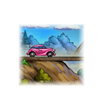

Получено: файл; исходный URL. Оригинальные байты, полученные по ссылке; идентичность архиву не подтверждена.


Мост на Домашнем острове
Браузерная социальная версия; историческая статья; дата редакции неизвестна- Тип
- Постройки
- Версия и дата
- Браузерная социальная версия; историческая статья; дата редакции неизвестна
Данные по источнику · Браузерная социальная версия · историческая статья; дата редакции неизвестна
Предварительно: один материал; требует сверки. Требуется сверка.
- Назначение
- После строительства каждые 3 часа турист оставляет чемодан; без сбора накапливается не более трёх.
- Строительство
- 20 бруса секвойи, 50 гвоздей и 10 канатов.
- Содержимое чемоданов
- По статье возможны монеты, опыт, вода, нефть, краски, лента, пружины и другие материалы.
- Примечание
- Соседи могут обкрадывать чемоданы; источник рекомендует Сторожа.
Связанные сущности
нет проверенных связей — требуется сверка.